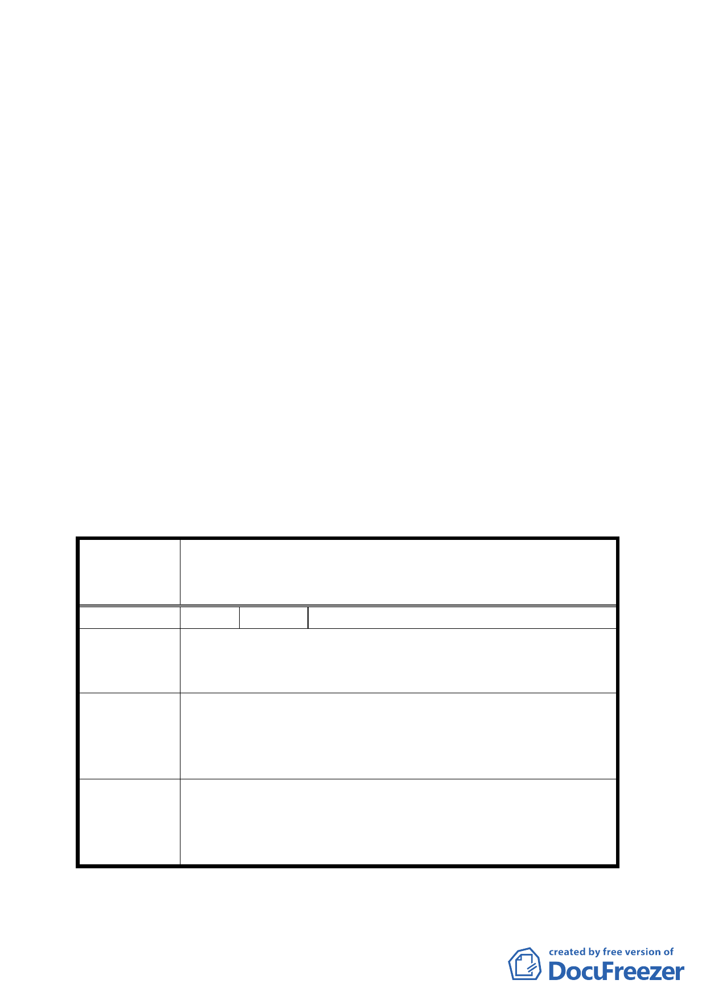

2.商業區與公園用地之區位調整。
3.都市設計管制要點中有關騎樓之相關規定。
討論事項五
案名：擬定臺北市信義區福德段二小段 319 地號等 11 筆土地社會
福利設施用地、公園用地、商業區及道路用地細部計畫案
一、本案係市府 95 年 3 月 31 日以府都規字第 09577732600 號函
送到會。並自 95 年 4 月 3 日起公開展覽 30 天。
二、法令依據：都市計畫法第 22 條
三、申請單位：臺北市政府
四、計畫範圍：詳計畫圖所示
五、變更理由及內容：詳計畫書
六、公民或團體所提意見：詳綜理表
決議：同主要計畫案決議。
臺北市都市計畫委員會公民或團體所提意見綜理表
擬定臺北市信義區福德段二小段 319 地號等 11 筆土
案 名 地為社會福利設施用地、公園用地、商業區及道路用
地細部計畫案
編 號 １ 陳情人 李茂輝
陳情地點：林口街 80 巷既成巷道
陳 情 理 由 建議規劃時一併徵收還市民私人空間，巷道會車意外頻傳，
長期超過 30 年以上居住品質不得安寧。
1.拓寬林口街 80 巷成為 25 米以上作為本巷口長期被侵權
建議辦法
使用補償措施。
2.要求 BOT 廠商提供林口街 80 巷民眾免費停車空間為 30
年來巷道被霸佔供民眾通行之回饋。
1.林口街 80 巷其道路功能與層級為地區巷道，且兩側均已
委員會決議
建築完成，現階段無拓寬道路之需求。
2.案內已規劃 500 個小汽車停車位、500 個機車停車位供周
邊居民使用，其停車收費依全市一致性之標準辦理。
六